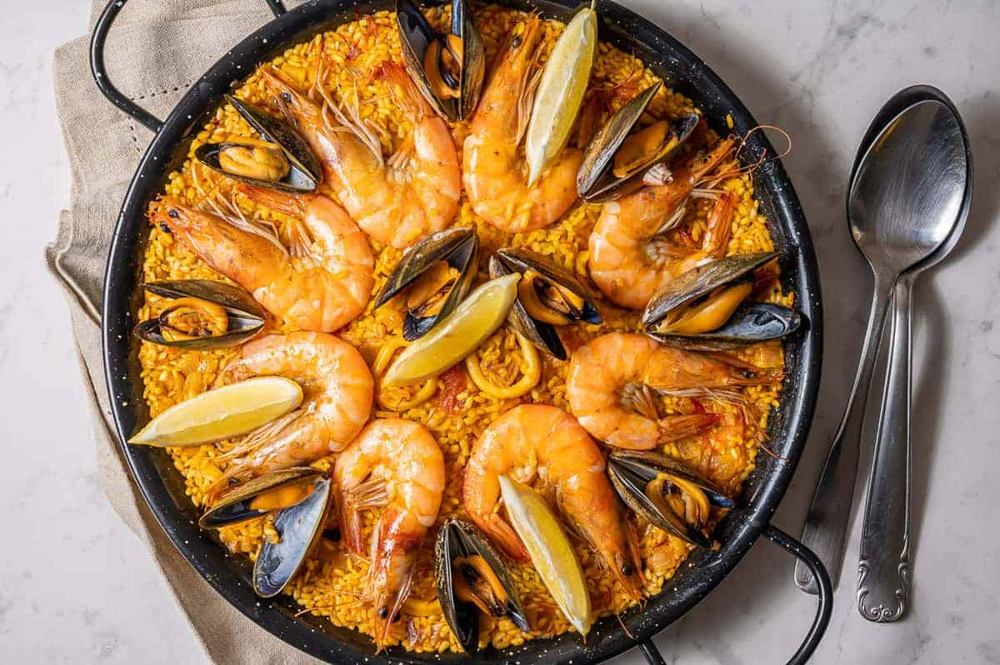

Paella Recipe

Paella, in Spanish cuisine, a dish of saffron-flavoured rice cooked
with meats, seafood, and vegetables. Originating in the rice-growing
areas on Spain's Mediterranean coast, the dish is especially associated
with the region of Valencia.
Set aside a fair amount of time if you undertake this dish. It may seem simple
but prepping the shellfish and seafood and other meats and vegetables
take a considerable amount of time. DO NOT LET THIS DISCOURAGE YOU!
The result is well worth the time and effort spent. Include family members to
speed up the preparation of this dish.
Ingredients
- olive oil
- 1 onion
- 2 cloves garlic
- 1 red bell pepper
- chorizo
- 2 skinless boneless chicken breasts
- Arborio rice
- 5 cups chicken broth
- white wine
- thyme
- saffron
- salt & pepper
- 2 squid
- 2 tomatoes
- green peas
- large shrimp
- 1 pound mussels
- parsley
- lemon for garnish
Steps:
- Heat olive oil in paella pan over medium heat. Add onion, garlic and pepper;
cook and stir for a few minutes.
- Add chorizo sausage, diced chicken, and rice; cook for 2 to 3 minutes.
- Stir in 3 1/2 cups stock, wine, thyme leaves, and saffron. Season with salt
and pepper. Bring to the boil, and simmer for 15 minutes; stir occasionally.
- Taste the rice, and check to see if it is cooked. If the rice is uncooked,
stir in 1/2 cup more stock. Continue cooking, stirring occasionally. Stir
in additional stock if necessary: use up to 2 cups additional stock, 5 cups
total. Cook until rice is done.
- Stir in squid, tomatoes, and peas. Cook for 2 minutes. Arrange prawns and
mussels on top. Cover with foil, and leave for 3 to 5 minutes.
- Remove the foil, and scatter parsley over the food. Serve in paella pan,
garnished with lemon wedges.